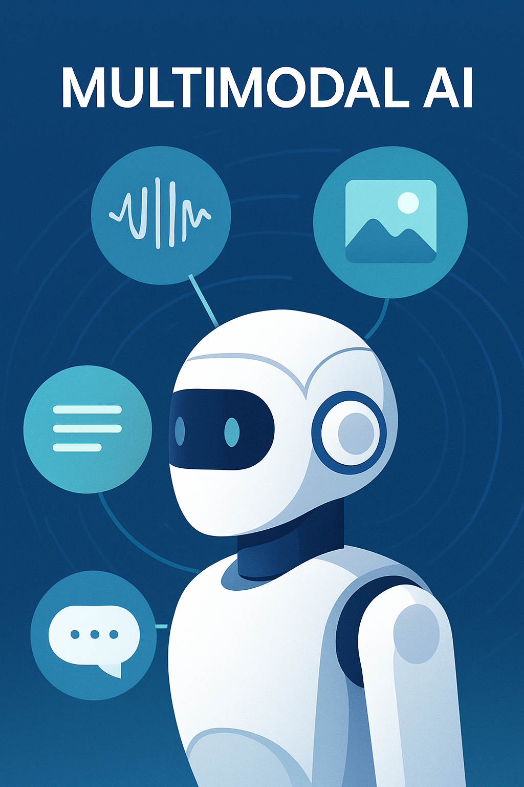

Multimodal AI: The Next Evolution of Intelligence
For decades, artificial intelligence systems focused on one type of data at a time—language models generated text, while computer vision models identified objects in images. Multimodal AI breaks down these silos by processing multiple input types simultaneously, whether text, images, audio or video. This cross‑modal understanding unlocks richer interactions and more versatile applications.
What Is Multimodal AI?
A multimodal model learns to associate patterns across different modalities. When you ask a model to describe an image or generate an image from a prompt, it uses knowledge learned from both textual and visual data. Multimodal systems like OpenAI’s DALL‑E and GPT‑4 can take a text description and produce a detailed image, or converse about uploaded photos. They mirror the way humans combine sight, sound and language to understand the world.
Why It Matters
- Richer Interactions: Multimodal chatbots can interpret images, respond with diagrams or voice, and offer more natural conversations.
- Accessibility: These models can describe pictures for visually impaired users or generate captions automatically.
- New Creative Tools: Artists and designers use multimodal AI to brainstorm visuals or design concepts from textual prompts.
- Powerful Insights: Companies can analyze text documents, charts and photos together to find patterns or detect anomalies.
Challenges and Considerations
Training multimodal models requires large, diverse datasets and significant compute resources. There are also concerns about biases in training data and the potential misuse of generative tools. As with all AI, transparency and responsible use are essential.
The Road Ahead
As AI adoption continues to grow【911144934114524†L58-L77】, expect multimodal capabilities to become standard in consumer and enterprise tools. Soon, your digital assistant could seamlessly analyze your documents, generate matching visuals and discuss them with you—all within one interaction.